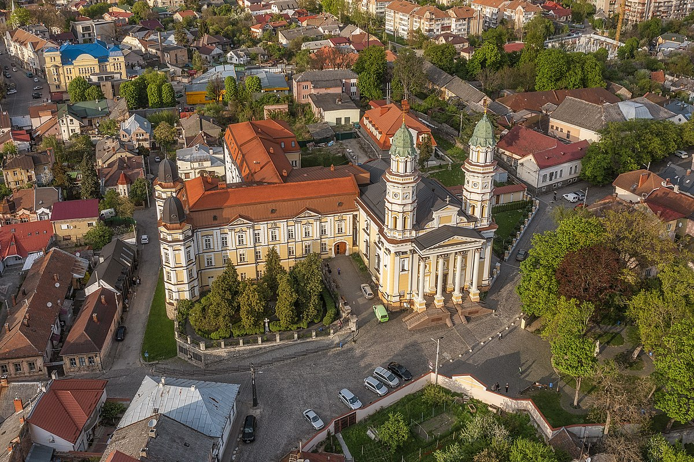

Місце народження: 7 квітня, 2005 р., м. Полтава
Освіта: Хорольська гімназія №2, м. Хорол, Полтавська область;
НТУУ "КПІ ім. І. Сікорського", м. Київ
Хоббі:
Мої улюблені книги:
У́жгород — місто на заході України, обласний центр Закарпатської області, центр Ужгородської міської громади, Ужгородського району та Ужгородської агломерації. Розташоване на річці Уж біля підніжжя Українських Карпат, за 811 км від Києва, на кордоні зі Словаччиною.
Є найменшим обласним центром України, проте має багату й давню історію. Засноване у IX столітті. Місто тимчасово перебувало під владою Угорщини, а згодом — Австро-Угорщини. Було тривалий час фортецею роду Другетів. Ужгород розвивався як промисловий та культурний центр Закарпаття. У 1919 році був столицею Підкарпатської Русі у складі Чехословаччини, за результатами першого Віденського арбітражу 1938 року став частиною Хортистської Угорщини, у 1945 році увійшов до складу УРСР, з 1991 року — у складі Незалежної України.
Серед найвідоміших місць Ужгорода є його замок, туристів також приваблюють костел, синагога та резиденція єпископа. У 1646 році під егідою Ватикану проголошено Ужгородську унію та утворено греко-католицьку церкву на Закарпатті.
